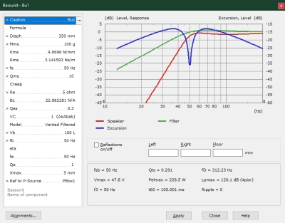

LE Tools - Bassunit
| Home | LE-Part | Bassunit | Alignments |
 |
The Bassunit Calculator is the heart of this component as it allows to
quickly assess the performance of the loudspeaker system, approximately.
The input is the same Parameter Editor
as with the component Bassunit.
On changing values the calculation is triggered automatically.
The processor is based on the classic Thiele/Small/Benson
model [33, 38].
The outputs are two-fold: graphic and performance parameters.
Optionally you can specify reflecting walls.
Button Alignments yields another calculator. Alignments can be used to find sets of parameters of good performance.
Button Apply will assign specified parameters of the tool-form to the original component.
Parameters
The parameters are a copy of those entered at
Bassunit. The operation is explained at chapter
Parameter Editor.
Parameter Model specifies the loudspeaker-system. You can select from
Closed, Vented, Closed Filtered, Vented Filtered. Filtered means that
the driving signal is modified by a high-pass filter of second order. Its parameters
are the filter frequency fe and the quality-factor Qe.
After a modification the calculation of curves and of performance values is run
automatically.
Radiation and Reflections
For Bassunit the response of the radiated sound pressure assumes a reflection free environment (4πsr). In practice however, there will be diffraction caused by a finite baffle. At high frequencies the baffle would yield an amplification of a factor of two. Further, there are almost always nearby reflecting walls, for example, a floor, a wall at the back and so on.
Inside the main-simulator of AKABAK you can of course place the Bassunit in a room or close to acoustic boundaries in order to simulate reflection and diffraction.
Reflections, have a strong effect on the response. It is helpful to be able to
evaluate the effect of nearby walls, at least approximately.
Therefore, there is the option to specify the distance to reflecting walls.
Reflections on/off enables/disables the weighing of the response with
acoustic reflections. Specify the distance at the input-fields Left,
Right and Floor. If there is one value we have a single reflecting wall
and the amplification is 6dB at low frequencies. At high frequencies there are
ripples caused by interference. If there are two values we have an edge and the
amplification would be 12dB. If a corner is specified we would have an
amplification of 18dB. Note, this is an approximation. Naturally there would be
damping. The labels Left, Right, Floor are chosen arbitrarily. Important is that
the walls a perpendicular. Further, here, the reflection-calculation has no effect on
the radiation impedance, hence no effect on the excursion. In reality, however,
there would be a feedback of the reflected sound to the loudspeaker-system.
Graph
There are three curves: Frequency responses of sound pressure, of excursion and optional of a high-pass filter. These curves are normalized to their asymptote.
Sound pressure
p = V1·BL/Re·1/Mms ·ρ·SD·G0·Hp
with V: input voltage,
BL: Transducer-Factor,
Re: voice coil resistance,
Mms: mass of vibrating assembly,
ρ density of air, SD: area of diaphragm, G0 = exp(-jkd)/4πd,
k = ω/c: wavenumber, c: speed of sound, d: distance,
Hp: normalized frequency response (curve as displayed in diagram).
For the sound pressure free-field radiation conditions are assumed.
Excursion
x = V1·BL/Re·1/Kms· Hx
with Kms: stiffness of suspension (Kmc, if in closed enclosure), Hx: normalized frequency response of excursion (curve as displayed in diagram).
Filter
 |
A high-pass filter can reduce the excursion. A second order filter is most effective. Typically this filter is placed somewhere in front of the amplifier.
V1 = V0·H
If parameter Model = [Closed Filtered, Vented Filtered] then

If parameter Model = [Closed, Vented] then
V1 = V0
with Se = jω/ωe, ωe = 2πfe: filter frequency, Qe: quality factor of filter.
Performance
This box provides certain values from which we can evaluate the performance of the configuration.
fs is the resonance frequency of the speaker-driver if vented.
fc is the resonance frequency of the speaker-driver in the closed enclosure.
Qts is the total quality factor of the driver if the enclosure is vented.
Qtc is the total quality factor of the driver in the closed enclosure.
fD is the directivity frequency where the wavelength is equal to the circumference (alternatively fD is where k·r = 1, with k: wavenumber, r: radius). The directivety frequency helps to evaluate the frequency range where the pattern of radiation starts to form a beam.
Vmax is the voltage (peak) where the maximum of the response-amplitude of excursion is equal to Xmax. This parameter needs to be specified.
Pelmax is the related electric input power.
Lpmax is the related sound pressure assuming free-field radiation conditions.
f3 is the cut-off frequency of the sound pressure response. At f3 the level is down by 3dB compared to the level at high frequencies.
t60 is a reverberation-time by which the sound pressure level dropped by 60dB after the signal has been switched off. t60 is measured at the pole frequency of the block of highest quality factor. The reverberation-time should be short.
Ripple reports on the level-difference of the largest peak in the sound pressure response.